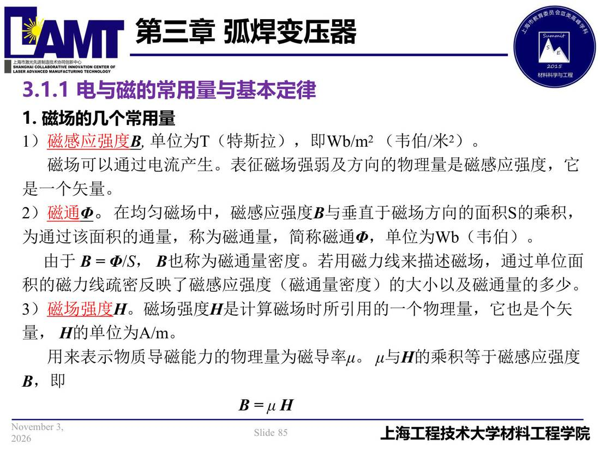

03 第3章 弧焊变压器/p085 3.1.1 电与磁的常用量与基本定律
p085 3.1.1 电与磁的常用量与基本定律
📄 原文：📄 弧焊电源 课件（PDF 第 85 页）（幻灯片 85/273；PDF 第 85 页）
3.1.1 电与磁的常用量与基本定律

讲义原文
- 磁场的几个常用量
-
磁感应强度B, 单位为T（特斯拉），即Wb/m2（韦伯/米2）。 磁场可以通过电流产生。表征磁场强弱及方向的物理量是磁感应强度，它是一个矢量。
-
磁通Φ。在均匀磁场中，磁感应强度B与垂直于磁场方向的面积S的乘积， 为通过该面积的通量，称为磁通量，简称磁通Φ，单位为Wb（韦伯）。
由于B = Φ/S， B也称为磁通量密度。若用磁力线来描述磁场，通过单位面积的磁力线疏密反映了磁感应强度（磁通量密度）的大小以及磁通量的多少。
- 磁场强度H。磁场强度H是计算磁场时所引用的一个物理量，它也是个矢量， H的单位为A/m。 用来表示物质导磁能力的物理量为磁导率μ。 μ与H的乘积等于磁感应强度
B = μ H
本页标红（老师强调）
- 磁感应强度
- 磁场强度